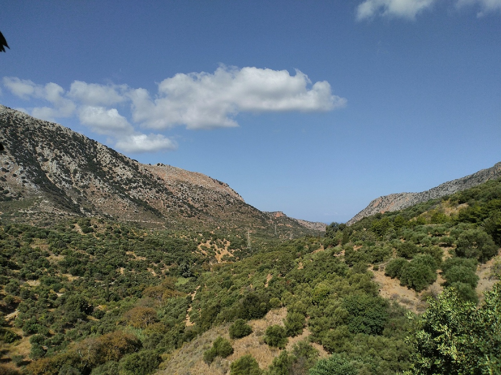
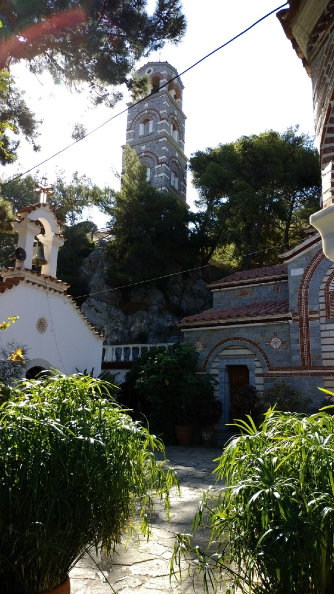
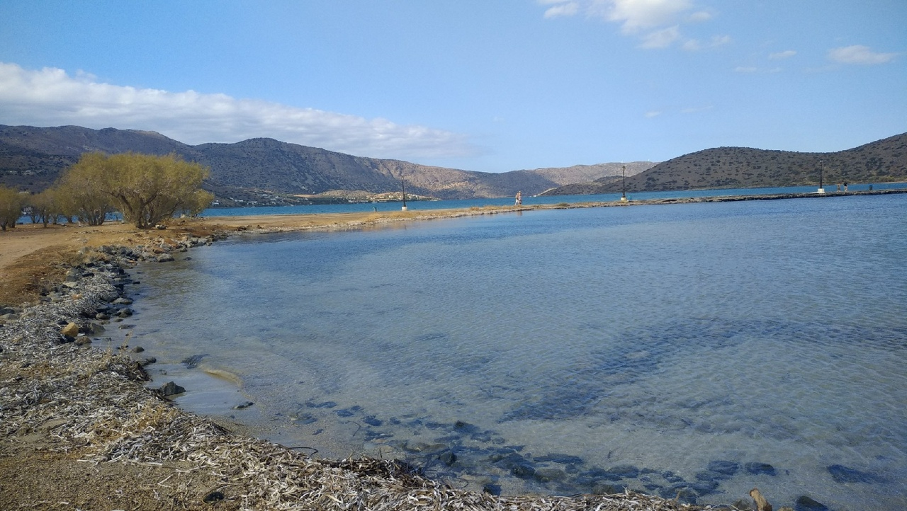
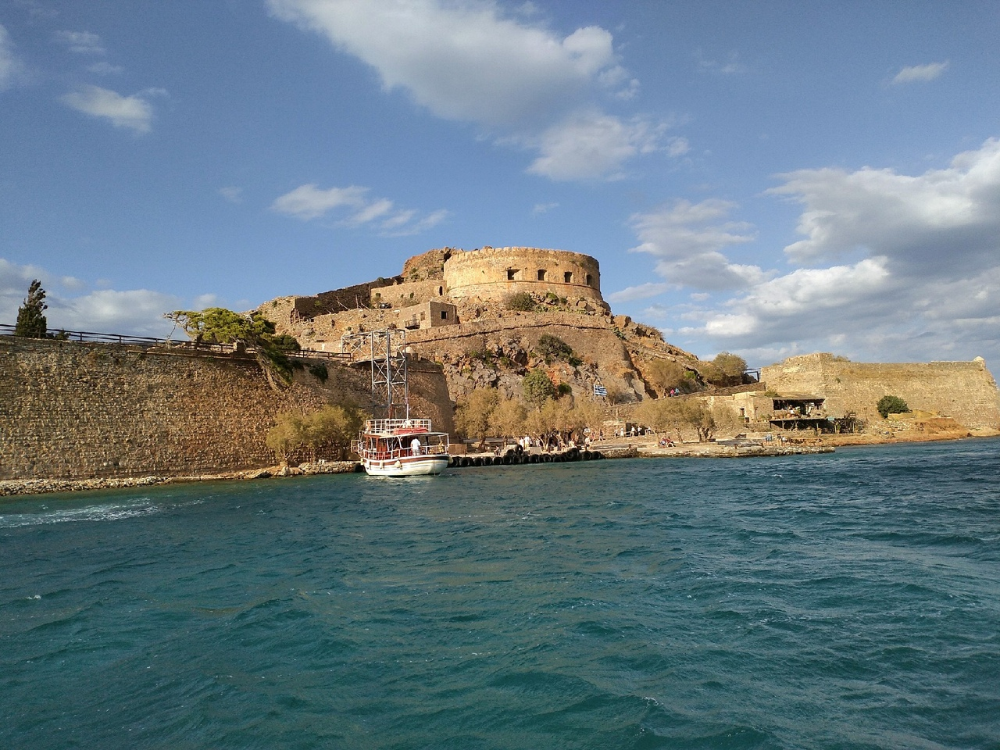
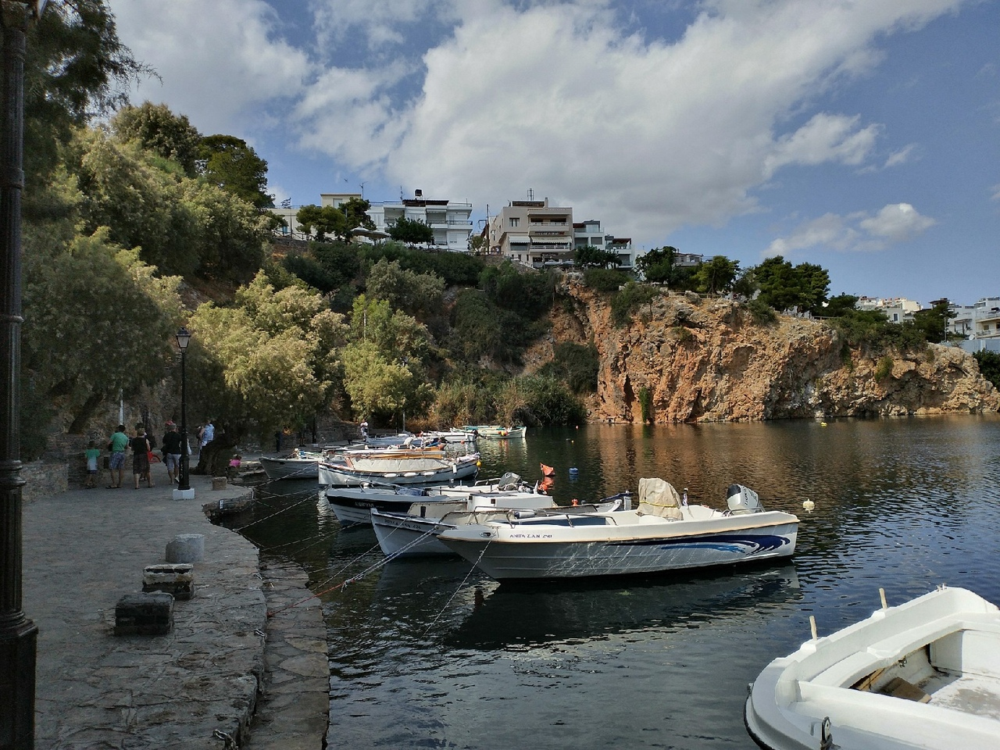
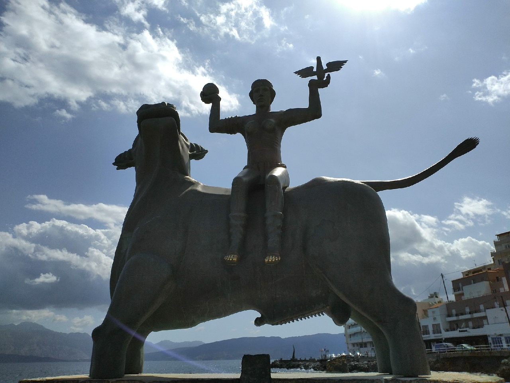
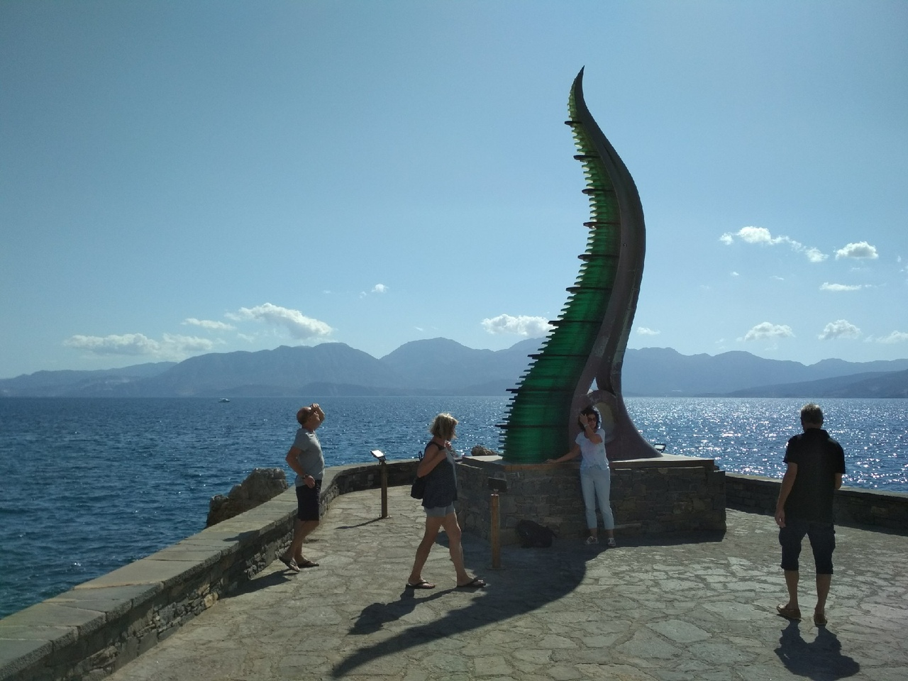

Лассити - одна из самых живописных и зелёных областей Крита. Здесь можно укрыться от суеты и погрузиться в быт критян, посетить аутентичные деревни и уединённые пляжи, увидеть впечатляющие ущелья и старые монастыри. Область Лассити наполнена рукотворными и природными достопримечательностями, посещение которых разнообразит отдых на Крите.


Достопримечательности
Монастырь
Инфы нет

- Координаты:
- Вход бесплатный
Древний город Олус
Этот город, несмотря на то, что он, по сути, невидим, — одно из наиболее важных мест на Крите.Олус особенно процветал, по разным источникам, в минойский период (3000—900 гг. до н. э.). Развалины древнего города до сих пор можно увидеть на дне канала Порос.
Затонувший город Олус (Греция) — описание, история, расположение. Точный адрес, телефон, веб-сайт. Отзывы туристов, фото и видео.Этот город, несмотря на то, что он, по сути, невидим, — одно из наиболее важных мест на Крите. Олус особенно процветал, по разным источникам, в минойский период (3000—900 гг. до н. э.). Развалины древнего города до сих пор можно увидеть на дне канала Порос. Здесь были найдены многочисленные артефакты, в том числе письмена 3 в. до н. э., из которых можно сделать заключение о тесных связях меж Олусом, Лато и Кноссосом.
В 1937 г. французский археолог Ван Эффентерре нашёл над аркой раннехристианской базилики Олуса фрагмент таблички, надпись на которой рассказывала о разрыве союза меж Олусом и Родосом. А в 1960 г. профессор А. Орландос обнаружил недостающий фрагмент таблички, который сегодня можно увидеть в Музее Агиос-Николаоса. Надпись была сделана на дорийском диалекте. Если верить надписи, то причиной разрыва стали унизительные для жителей Олуса условия, по которым они должны были платить Родосу слишком большую дань. Подобным же союзом Родос был связан с Иерапетрой, стремясь получить контроль над всей восточной частью Крита.

Именно Олус, или Олунда, дал название современной Элунде.
После того, как Крит захватили дорийцы, Олус населяли около 30 тыс. человек. Они добывали пресную воду из источников, которые существуют здесь и по сей день. Жители Олуса почитали Зевса, Марса (Ареса) и Артемиса Вритомартиса. Древний писатель Паусаниас сообщает, что в его время, во 2 в. до н. э., Олус был одним из тех городов, где имелась почитаемая статуя Вритомартиса, воздвигнутая мифическим Дедалом, отцом критского искусства. В Олусе были самоуправление и собственная валюта, и город являлся крупным центром экспорта в восточные и ионические порты.В Олусе были самоуправление и собственная валюта, и город являлся крупным центром экспорта.
Не известно, когда и кем именно город был разрушен; но, вероятнее всего, это произошло в самое бедственное время для всего Крита. Разные исследователи сходятся на том, что Олус существовал еще при греках, римлянах и в первый византийский период (824 г. до н. э.). Второй византийский период был разрушителен почти для всех греческих городов; в период с 821 по 901 гг. внутренние проблемы византийского управления и противостояние повстанцев, которых возглавлял св. Фома, императору Михаилу дали сарацинам возможность вторгнуться на Сицилию и Крит. Олус не избежал их набегов, поскольку был близко к морю и, таким образом, представлял привлекательную цель для арабских разорителей.
- Координаты:
- Вход бесплатный
Остров прокаженных Спиналонга
Спиналонга — остров с рваными очертаниями, который находится у самого берега в восточной части Крита, в заливе Мирабелу. Когда-то островок был частью материка, но позднее тонкая перемычка была разрушена — по некоторым данным, не естественным путём, а руками венецианцев. Ещё до начала периода их владычества на Спиналонге уже была выстроена крепость. Венецианцы сразу оценили преимущества расположения островка в бухте и возвели здесь полноценное укрепление, которое долгие века оставалось практически неприступным. В 16 веке в условиях постоянной борьбы за владычество на Средиземном море это было необходимо: Кипр уже находился под властью Османской империи, и турки постоянно совершали набеги на берега Крита. В середине 17 века османцы захватили-таки Крит, но Спиналонгу венецианцам удавалось удерживать в своих руках ещё 75 лет. Островок стал последним прибежищем христиан на Крите.
Спиналонга (Греция) — описание, история, расположение. Точный адрес, телефон, веб-сайт. Отзывы туристов, фото и видео.
Спиналонга — остров с рваными очертаниями, который находится у самого берега в восточной части Крита, в заливе Мирабелу. Когда-то островок был частью материка, но позднее тонкая перемычка была разрушена — по некоторым данным, не естественным путём, а руками венецианцев. Ещё до начала периода их владычества на Спиналонге уже была выстроена крепость. Венецианцы сразу оценили преимущества расположения островка в бухте и возвели здесь полноценное укрепление, которое долгие века оставалось практически неприступным. В 16 веке в условиях постоянной борьбы за владычество на Средиземном море это было необходимо: Кипр уже находился под властью Османской империи, и турки постоянно совершали набеги на берега Крита. В середине 17 века османцы захватили-таки Крит, но Спиналонгу венецианцам удавалось удерживать в своих руках ещё 75 лет. Островок стал последним прибежищем христиан на Крите.

Приезд первой партии прокажённых стал более действенным средством изгнать с островка турок, нежели вооружённое нападение.
В конце концов Спиналонгу также захватили турки, и здесь поселились мирные жители, преимущественно рыбаки. Но уже через полтора века роли переменились: на Крите произошли две революции. Теперь на островке турецкие семьи спасались от критян, но продолжалось это недолго, и к 1900 году Спиналонга был уже малообитаем. Через три года критское правительство подписало указ об обустройстве здесь колонии для прокажённых. Приезд первой партии больных стал более действенным средством изгнать с островка последних остававшихся на нём турок, нежели вооружённое нападение. В те времена лепра вызывала почти суеверный ужас. А возможность жить в относительно человеческих условиях в брошенных турками домах стала для больных Крита поистине актом милосердия.
Лепрозорий на острове сохранился и после того, как Крит вошёл в состав Греции, и больных сюда привозили со всей страны, а позднее и из других стран. Обстоятельства жизни в колонии прокажённых Спиналонги долгое время были кошмарными. Дома находились в полуразрушенном состоянии, и возможностей их отремонтировать у больных не было. Не хватало денег, пищи, даже питьевой воды. Ситуация стала меняться к лучшему только после Второй мировой войны, а до того Спиналонга оставался островом слёз и скорби.
- Координаты:
- Вход 8 евро, паром 10 евро
Агиос-Николас
Этот город называют местным Сен-Тропе, мол, на Крите сложно найти более комфортабельный курорт, чем Агиос-Николаос. Днем городок мирно спит, окунув ноги в озеро Вулизмени. А ближе к вечеру просыпается огнями кафе и ресторанов, ночных клубов, где непрерывно встречаются и расстаются люди.Странно, но этот город был построен как место спасения — критяне защищались от турецких гонений. Получается, что изначально в нем царила атмосфера страха. Но греки такой народ — не могут долго пребывать в мрачном настроении. Они любят веселиться. За что их и обожает весь мир.

- Координаты:
- Вход бесплатный
Озеро Вулезмени
Это озерцо расположено в самом сердце Агиос-Николаоса, и оно определенно «делает» облик города. Небольшая узкая протока соединяет озеро Вулизмени с заливом, и фотография этой перемычки с мостиком — самый узнаваемый вид города. По берегам озерца рядками выстраиваются катера и лодки, создавая весьма живописные декорации для тех, кто соблазняется одним из многочисленных (и многолюдных) кафе, которые во множестве расположены близ перемычки. С озером связана красивая легенда, согласно которой, оно не имеет дна. На самом деле, имеет, конечно, просто это дно очень тяжело найти: озеро очень глубокое для своих размеров, а внизу — густой слой ила.

А согласно второй легенде, еще более красивой, в этом озере купалась сама богиня Афина. Сегодня, увы, купаться в Вулизмени никому не посоветуешь: оно до невозможности замусорено, и на поверхности чего только не плавает. Правда, с давних времен здесь сохраняется вышка для ныряния, и периодически желающие её опробовать всё же находятся — но это всё равно что мыться в фонтане Треви.
- Координаты:
- Вход бесплатный
Скульптура "Похищение Европы"
текст

- Координаты:
- Вход бесплатный
Скульптура "Рог изобилия"
Скульптура "Рог изобилия" появилась на берегу Эгейского моря в 2012 году. Авторами проекта выступили архитекторы братья Сотириадис. В их понимании статуя представляет божественный атрибут. Монумент выглядит в форме огромного рога, выполненного из металлического каркаса и зеленого стекла.

Из греческой мифологии существует легенда, что на острове Крит когда-то была коза, которая своим молоком вскормила самого бога Зевса. Животное звали Амалфея. Мать бога грома и молнии боялась, что отец Крон убьет его. Верховное божество переживало, что сын свергнет его с престола и захватит власть. Мать спрятала Зевса у нимф. Те в свою очередь присматривали за ним, а коза Амалфея кормила молоком. После ее смерти на память Зевсу остался ее рог. Якобы он до сих пор где-то в горах хранится. Именно в честь него братья Сотириадис и сделали свою скульптуру.
- Координаты:
- Вход бесплатный
2019 год